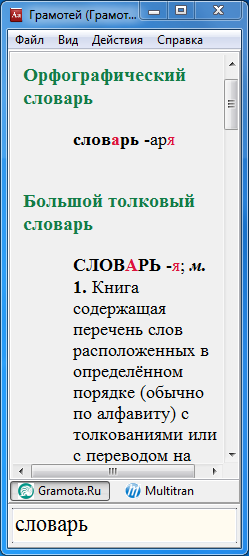
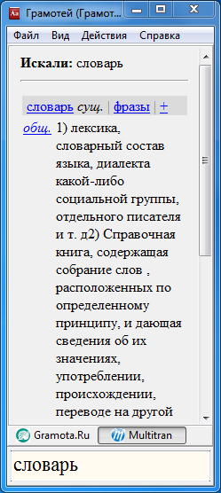
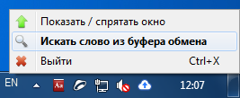

Приложение для быстрого русскоязычного поиска по словарям:
Поиск слова в словарях Грамота.Ру возможен с использованием шаблонов.
Шаблоны могут включать в себя подстановочные символы звездочка (*) и вопросительный знак (?).
Примеры правильных запросов: чес*ный, проф*ес*ор, ветрен*ый.
Поиск слова в словаре Мультитран.Ру возможен только при точном написании. Шаблоны не поддерживаются.
Ввод слова вручную


Поиск слова из буфера обмена
Для поиска из буфера обмена следует вызвать контекстное меню иконки в SystemTray или дважды кликнуть на значке "Грамотей" .
